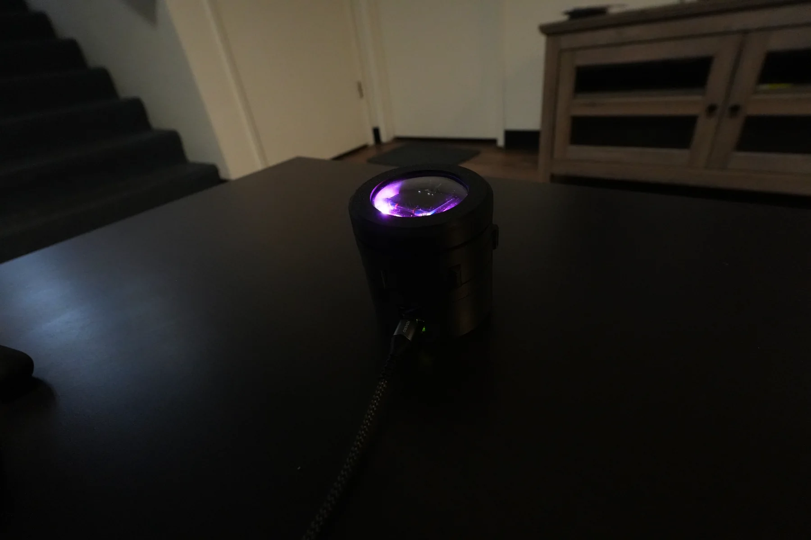
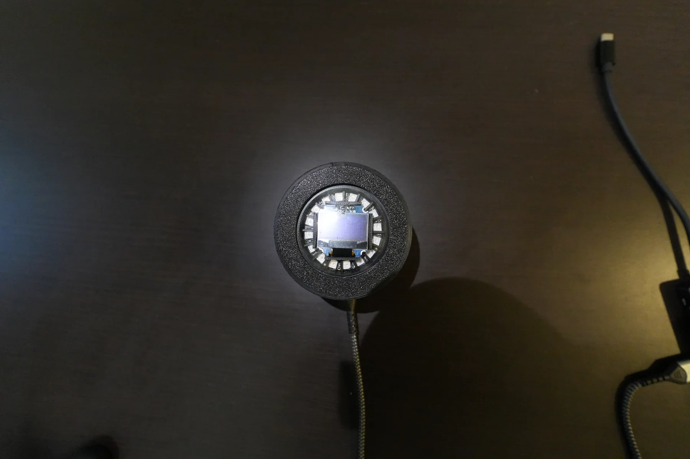
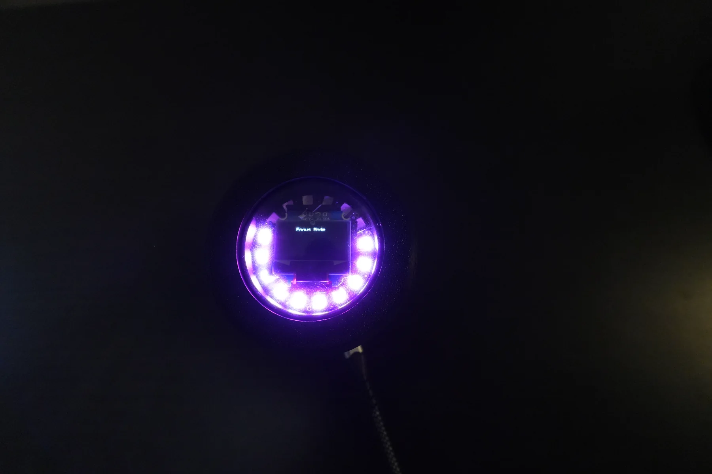

The physical prototype
I built my own Focus Dial
A Physical Productivity Device That Forces You to Commit
The Focus Dial is a custom-built physical Pomodoro timer that eliminates phone-based distractions by requiring a deliberate physical interaction to begin and end a work session.
The device combines mechanical input, embedded firmware, and visual feedback to create a more intentional focus workflow.

Project Video
Watch: Engineering Through My Lens (First Video)Problem Statement
Most digital timers fail at the moment they are needed most: they run on the same phone that also contains messages, social feeds, and context-switching triggers. Productivity apps add interface complexity but still rely on a distracting platform.
Focus tools should remove digital noise and reduce decision friction. A physical timer shifts behavior by making commitment tangible, which improves session start consistency and reduces mid-session interruption.
Design Goals
- Fully physical interaction (no touchscreen)
- Minimal UI, intuitive operation
- Visual representation of remaining time
- Seamless integration with iPhone Do Not Disturb
- Compact, desk-friendly form factor
- Designed for future manufacturability
Hardware Architecture
The Focus Dial hardware stack is centered on an Arduino Nano 33 IoT, selected for compact size, stable I/O, and integrated Bluetooth capability.
Inputs
- Rotary encoder (5-pin) for setting session duration
- Physical push button for mode control and session confirmation
Outputs
- OLED display for time value and system-state feedback
- NeoPixel LED ring for radial visual countdown mapping
- Bluetooth communication for iOS Shortcut trigger events
The rotary encoder provides dynamic time selection with detent-based increments, allowing rapid adjustment without nested menus. During runtime, the LED ring maps remaining time as a shrinking arc, giving an immediate peripheral cue of session progress.

Firmware & Logic
Firmware was structured around a deterministic state machine with clear transitions between idle, setup, active focus, warning, and completion states. The encoder is read through a dedicated library with interrupt-assisted edge capture to improve responsiveness during concurrent display and LED updates.
Time tracking uses millisecond-based scheduling to avoid drift, while OLED render states separate static labels from frequently changing timing values to reduce redraw overhead.
LED behavior is intentionally color-coded for quick interpretation:
Green = active focus Yellow = nearing completion Red = session completeBluetooth event packets are transmitted at session start and stop to trigger an iPhone Shortcut that activates Do Not Disturb, enabling a synchronized physical-to-digital focus handshake without app interaction during work cycles.

Mechanical & Industrial Design
The enclosure was custom-modeled in Fusion 360 and dimensioned directly from component footprints and wiring volume. Mechanical layout decisions prioritized ergonomic button reach, rotary encoder shaft alignment tolerance, and even LED diffusion through the top face.
Internal mounting bosses were integrated for repeatable board positioning and serviceability during rework. Prototypes were iterated through multiple 3D printed revisions, moving from rapid PLA concept shells to tighter-fit prints for final geometry validation and assembly checks.
Key Engineering Challenges
- Stabilizing encoder input by tuning debounce handling and filtering false transitions.
- Managing LED current draw while maintaining brightness consistency and microcontroller stability.
- Improving Bluetooth trigger reliability across repeated iPhone shortcut sessions.
- Preserving UI clarity on a small OLED with limited character and layout space.
- Packaging all electronics into a compact enclosure without sacrificing assembly access.
Each issue was resolved through iterative bench testing, targeted firmware refinements, and enclosure modifications that balanced electrical, software, and mechanical constraints as a single system.
What I Learned
This project strengthened my ability to integrate embedded hardware and firmware into a cohesive product behavior. It also reinforced human-centered design principles: the best technical solution is not only functional, but also legible and low-friction for the user.
I gained practical experience coordinating hardware-software synchronization and planning architecture that can support future iteration without full redesign.
Future Improvements
- Custom PCB instead of breadboard wiring
- Rechargeable battery system
- Injection-mold-ready enclosure design
- Expanded timer presets
- Companion mobile app
Physical interaction, less distraction
The Focus Dial represents my interest in building physical systems that improve human behavior through intentional design.
It sits at the intersection of mechanical design, embedded systems, and product thinking, and it serves as the foundation for future hardware products.